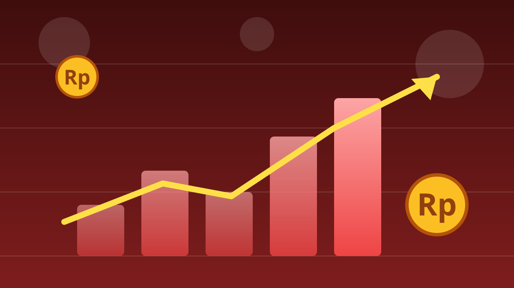

1 / 6

💰 EKONOMI
Bursa saham RI kena rem darurat
IHSG anjlok 8% di pembukaan sampai BEI menghentikan perdagangan. Pemicunya: MSCI mau "turun kasta"-kan pasar saham Indonesia. Geser →
2 / 6
📉
Anjlok 8% di pembukaan, langsung dihentikan
Pada Jumat (16/10/2026), IHSG dibuka di level 5.393,92, turun 469,86 poin atau 8,01% dari penutupan sebelumnya di 5.863,78. BEI langsung menerapkan trading halt — penghentian sementara perdagangan selama 30 menit, pukul 08.58–09.28 WIB.
3 / 6
😬
Setelah dibuka lagi, makin dalam
Tekanan jual tidak berhenti. IHSG sempat merosot lebih dari 11% ke kisaran 5.200, dan sesi pertama ditutup melemah 10,76% di level 5.233,00. Indeks LQ45 yang berisi 45 saham unggulan ikut terkoreksi 8,33% ke 540,95.
4 / 6
🌍
Apa itu MSCI dan kenapa separah ini?
MSCI adalah penyedia indeks global yang jadi acuan dana-dana investasi dunia. Pada 15 Oktober 2026, MSCI membuka konsultasi untuk mengubah klasifikasi Indonesia dari Emerging Market menjadi Standalone Market — status yang menempatkan Indonesia di luar kelompok Developed, Emerging, maupun Frontier. Yang disorot MSCI: transparansi kepemilikan saham, konsentrasi kepemilikan, dugaan perdagangan terkoordinasi, dan efektivitas penegakan aturan.
5 / 6
⏳
Belum final — masih ada waktu sampai 2027
Status Indonesia saat ini masih Emerging Market. MSCI menerima masukan pelaku pasar sampai 30 April 2027 dan akan mengumumkan keputusan sebelum 30 Juni 2027. Rencana reklasifikasi tetap berjalan, kecuali ada bukti jelas perbaikan material dalam tata kelola dan fungsi pasar. OJK menegaskan reformasi pasar modal berlanjut, BEI meminta klarifikasi lebih lanjut ke MSCI, dan DPR menggelar rapat koordinasi dengan BEI, OJK, Danantara, hingga Polri. Rupiah ikut melemah ke kisaran Rp18.000 per dolar AS.
6 / 6
🤔
Efeknya ke lo apa?
Kalau lo punya reksadana saham atau baru belajar investasi, hari kayak gini adalah ujian mental: portofolio bisa merah dalam sehari. Ini bukan ajakan beli atau jual — tapi momen buat belajar bedain panik sesaat vs masalah fundamental, cek isi portofolio lo, dan jangan ambil keputusan pakai emosi (atau FOMO). Literasi finansial lo yang lagi diuji, bukan cuma angka di layar.